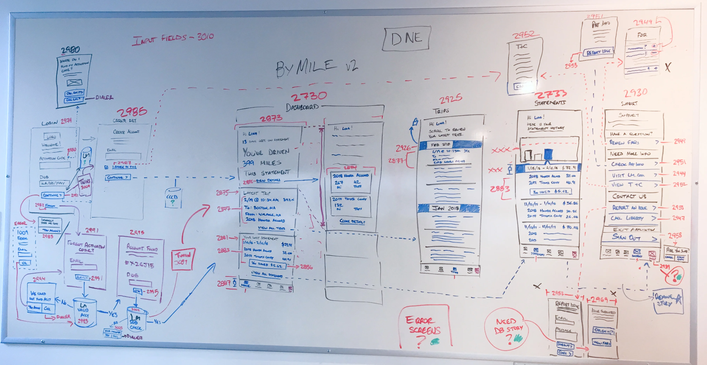

2017–2019 — Lead UX Designer
Liberty Mutual
RightTrack & ByMile
Liberty Mutual had an idea and a telematics platform. The idea was a driving behavior program: plug an OBD-II device into your car, let it monitor your habits, and earn a discount based on how safely you drove.
The design work went beyond screens. Driving data behaves differently depending on who's driving. A solo policy holder is measured differently than a family plan; the primary driver is treated differently from an occasional one. We worked through how data should be collected, displayed, and weighted for each scenario. Sensitivity calibration was its own problem: a hard stop at a traffic light registers the same as a sudden brake. Getting those thresholds right took iteration. Later in the engagement, Liberty moved to an accelerometer-only solution using the phone's native sensors, dropping the OBD-II hardware requirement entirely.
When RightTrack design was substantially complete, Liberty came back with a second concept. ByMile charged customers based on miles driven rather than driving behavior, a different model for a different kind of customer.
Both apps shipped and were updated annually. Sapient maintained and expanded them over several years, ported RightTrack to Brazil, and re-skinned ByMile as SafeCo for the west coast market.
- Client
- Liberty Mutual
- Role
- Lead UX Designer
- Platform
- iOS & Android
- Timeline
- 2017–2019
